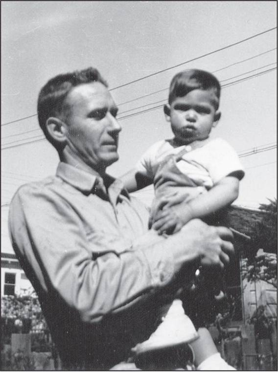
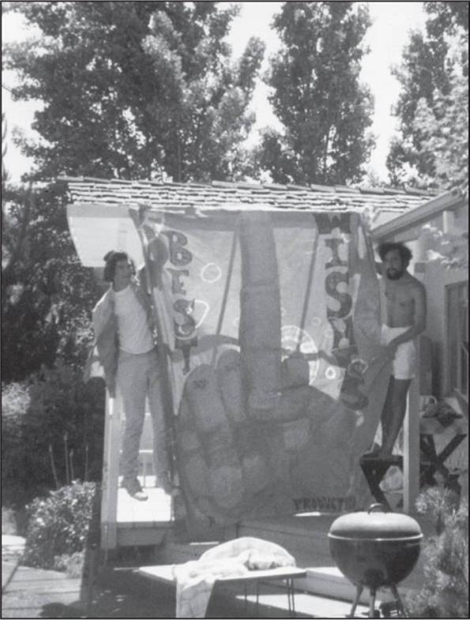

Based on more than forty interviews with Jobs conducted over two years—as well as interviews with more than a hundred family members, friends, adversaries, competitors, and colleagues—Walter Isaacson has written a riveting story of the roller-coaster life and searingly intense personality of a creative entrepreneur whose passion for perfection and ferocious drive revolutionized six industries: personal computers, animated movies, music, phones, tablet computing, and digital publishing.
At a time when America is seeking ways to sustain its innovative edge, Jobs stands as the ultimate icon of inventiveness and applied imagination. He knew that the best way to create value in the twenty-first century was to connect creativity with technology. He built a company where leaps of the imagination were combined with remarkable feats of engineering.
Although Jobs cooperated with this book, he asked for no control over what was written nor even the right to read it before it was published. He put nothing offlimits. He encouraged the people he knew to speak honestly. And Jobs speaks candidly, sometimes brutally so, about the people he worked with and competed against. His friends, foes, and colleagues provide an unvarnished view of the passions, perfectionism, obsessions, artistry, devilry, and compulsion for control that shaped his approach to business and the innovative products that resulted.
Driven by demons, Jobs could drive those around him to fury and despair. But his personality and products were interrelated, just as Apple’s hardware and software tended to be, as if part of an integrated system. His tale is instructive and cautionary, filled with lessons about innovation, character, leadership, and values.
Walter Isaacson, the CEO of the Aspen Institute, has been the chairman of CNN and the managing editor of Time magazine. He is the author of Einstein: His Life and Universe, Benjamin Franklin: An American Life, and Kissinger: A Biography, and is the coauthor, with Evan Thomas, of The Wise Men: Six Friends and the World They Made. He and his wife live in Washington, D.C.
MEET THE AUTHORS, WATCH VIDEOS AND MORE AT
SimonandSchuster.com
• THE SOURCE FOR READING GROUPS •
JACKET PHOTOGRAPHS: FRONT BY ALBERT WATSON;
BACK BY NORMAN SEEFF
COPYRIGHT © 2011 SIMON & SCHUSTER
ALSO BY WALTER ISAACSON
American Sketches
Einstein: His Life and Universe
A Benjamin Franklin Reader
Benjamin Franklin: An American Life
Kissinger: A Biography
The Wise Men: Six Friends and the World They Made
(with Evan Thomas)
Pro and Con
The people who are crazy enough to think they can change the world are the ones who do.
—Apple’s “Think Different” commercial, 1997

Paul Jobs with Steve, 1956
The Los Altos house with the garage where Apple was born

With the “SWAB JOB” school prank sign